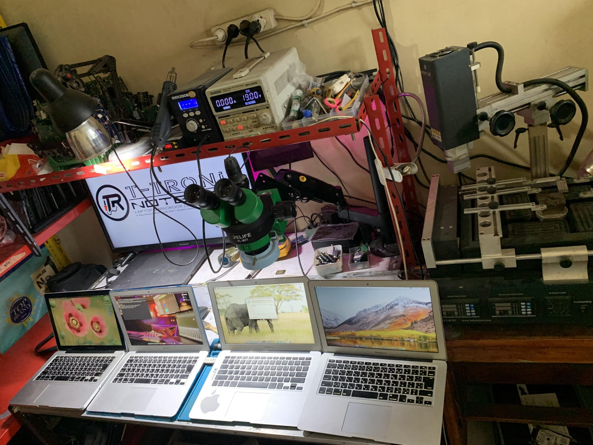
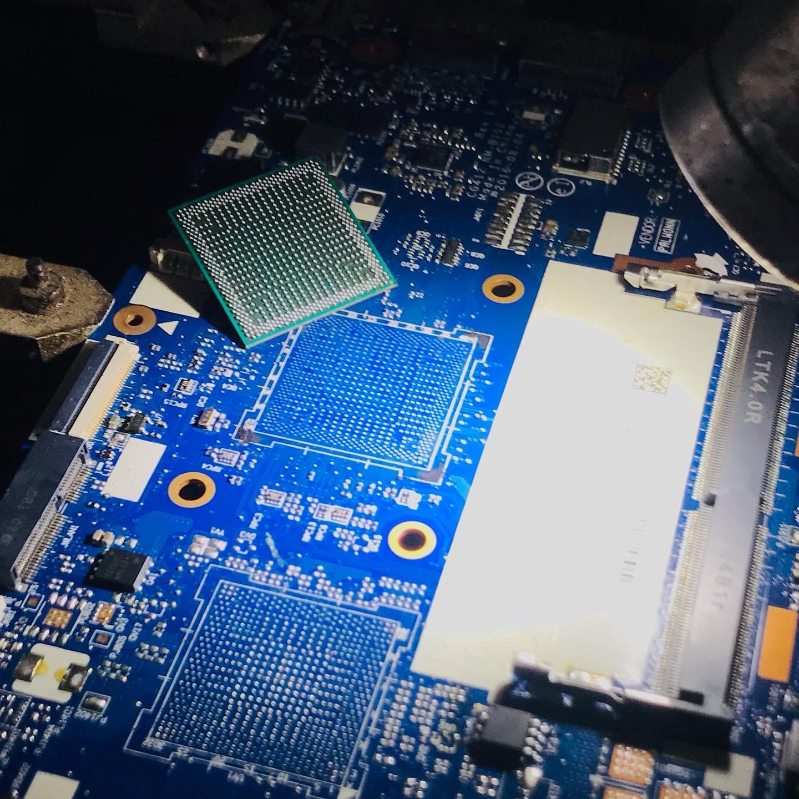

Spesialis Hardware & Software
Laptop rusak? Di Tasik, kami yang benerin.
Benua Komputer melayani service laptop & MacBook di Tasikmalaya — dari mati total sampai ganti layar. Pengerjaan bisa ditunggu, hasil bergaransi, dan teknisi sudah puluhan tahun di dunia reparasi.
Di Cibeureum, Tasikmalaya
Jl. Raya Awipari Tengah RT03/RW03 — langsung datang atau teknisi panggilan.
Jl. Raya Awipari Tengah RT03/RW03 — langsung datang atau teknisi panggilan.
Layanan
Yang kami tangani tiap hari
Bukan cuma install ulang. Kami benerin sampai ke level mainboard.


Kenapa Benua
Tiga hal yang bikin pelanggan balik lagi
Bisa ditunggu di tempat
Datang ke workshop Cibeureum, atau teknisi datang ke rumah/kantor di Tasik & sekitar.
Harga transparan
Estimasi dikasih tahu sebelum bongkar. Tidak ada biaya tersembunyi di akhir.
Bergaransi
Hasil servis kami garansi. Kalau sama masalahnya balik, kami benerin lagi.
Workshop
Lihat sendiri kondisi bengkel kami


Testimoni
Yang pelanggan bilang
"Asik… laptop saya sudah jalan lagi."
"Saya merasa sangat senang, karena laptop saya kembali normal."
"Alhamdulillah, laptop saya kembali normal."
"Alhamdulillah, laptope urip maning."
"Benua Komputer memang terbaik…"
"Terima kasih banyak Benua, yang telah menyelamatkan laptop saya."
Wilayah Layanan
Service laptop di Tasikmalaya & sekitarnya
Datang langsung ke workshop kami di Cibeureum, atau teknisi panggilan ke rumah/kantor. Area yang kami jangkau:
Cibeureum
Awipari
Singaparna
Mangkubumi
Indihiang
Tawang
Rajapolah
Ciamis
Garut
Pertanyaan
Sering ditanya
Berapa lama pengerjaan?
Kasus ringan seperti install ulang 1–2 jam (bisa ditunggu). Servis mainboard biasanya 1–3 hari tergantung ketersediaan komponen.
Apakah bisa datang langsung?
Bisa. Alamat kami Jl. Raya Awipari Tengah RT03/RW03, Awipari, Kec. Cibeureum, Kota Tasikmalaya. Jam buka Senin–Sabtu 08.00–20.30.
Apakah ada garansi?
Ya, hasil servis kami bergaransi. Estimasi & garansi dijelaskan sebelum pengerjaan dimulai.
Bagaimana cara booking?
Isi form di halaman Booking, atau langsung chat WhatsApp 0821-1475-2228. Kami akan konfirmasi jadwal.
Siap benerin laptop Anda?
Booking sekarang atau chat langsung — teknisi kami siap bantu.